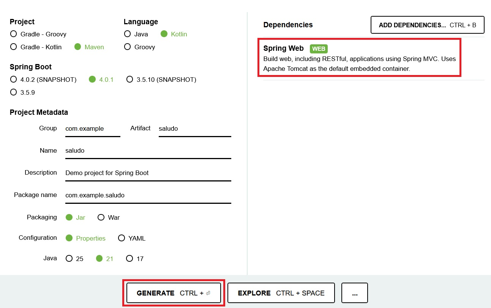
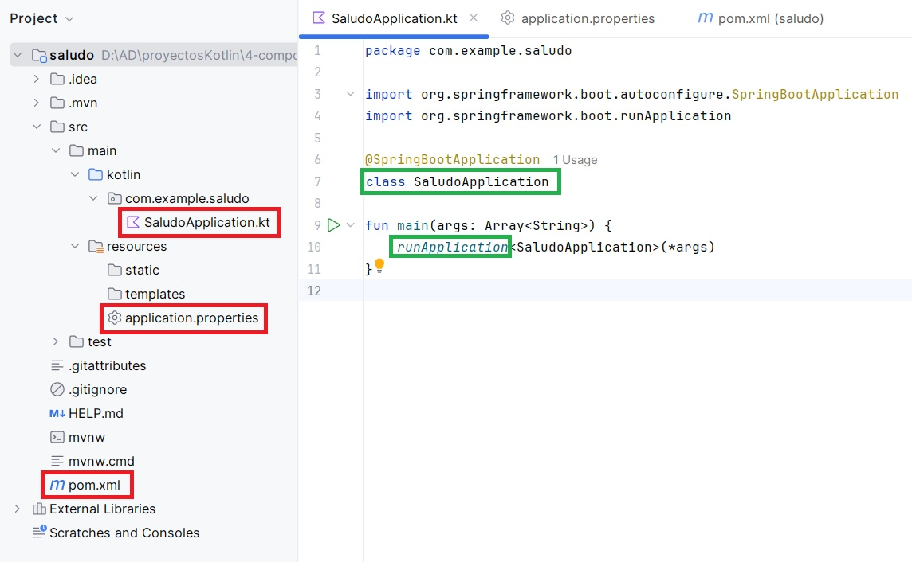
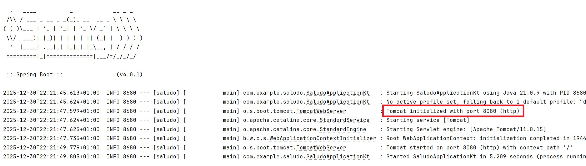
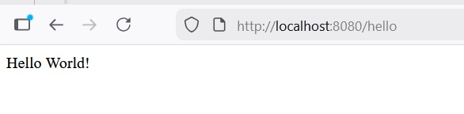
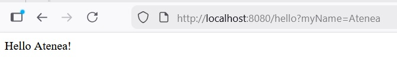
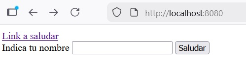
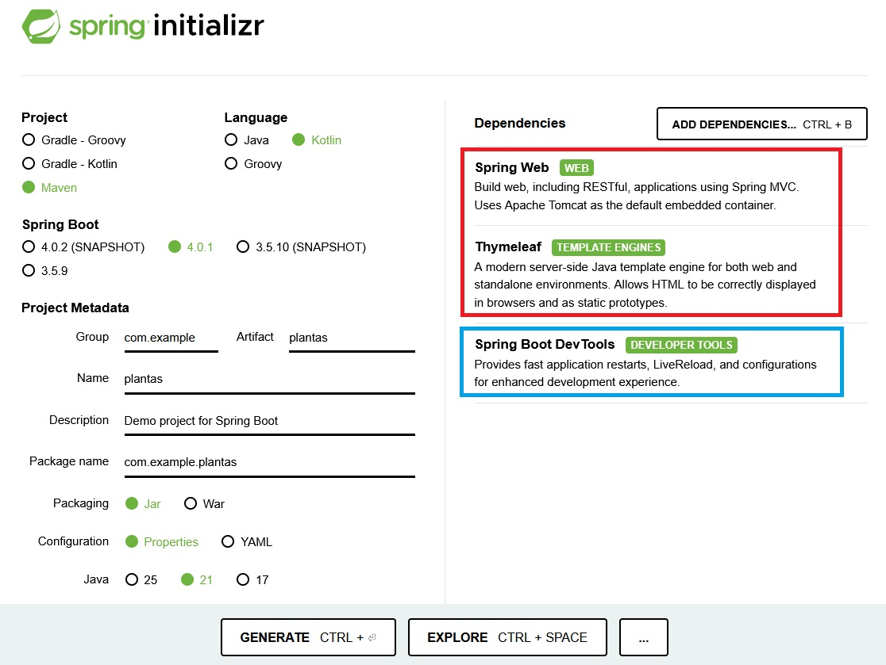
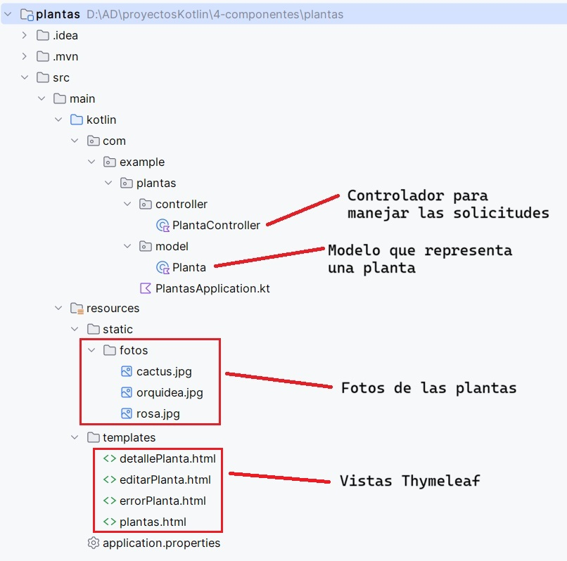
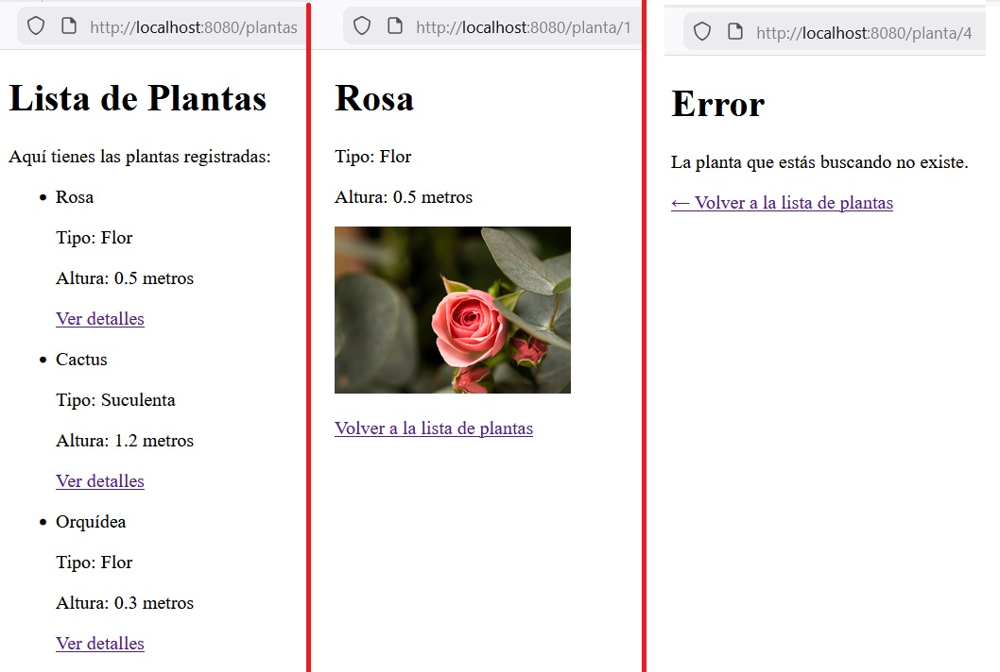
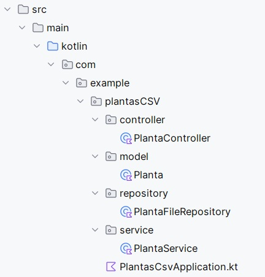

Unidad 4. Componentes (Spring Framework)¶
Revisiones
| Revisión | Fecha | Descripción |
|---|---|---|
| 1.0 | 30-12-2025 | Adaptación de los materiales a markdown |
4.1. Introducción¶
Spring es un framework de código abierto para crear aplicaciones en Java o Kotlin de forma más fácil, rápida y ordenada. Facilita el trabajo de crear objetos, conectar clases, preparar la base de datos y configurar servidores.
Los componentes principales de Spring Framework son:
| Componente | Descripción |
|---|---|
| Spring Core | El núcleo del framework, encargado de la inyección de dependencias |
| Spring MVC | Permite el desarrollo de aplicaciones web utilizando el patrón Modelo-Vista-Controlador |
| Spring Boot | Facilita la creación de aplicaciones basadas en Spring con una configuración mínima |
| Spring Data | Simplifica el acceso a datos con soporte para JPA, MongoDB, Redis, entre otros |
| Spring Security | Proporciona herramientas para implementar seguridad en aplicaciones |
| Spring Cloud | Ayuda en la construcción de aplicaciones distribuidas y microservicios |
Spring se basa principalmente en:
-
Inversión de Control (IoC): Se encarga de crear y gestionar los objetos de la aplicación.
-
Inyección de Dependencias (DI): Coloca los objetos donde hacen falta automáticamente.
Además tiene tres pilares:
1. Autoconfiguración (Spring Boot): prepara el proyecto por ti
-
Servidor web.
-
Conexión a base de datos.
-
Estructura de proyecto.
-
Dependencias necesarias.
2. Starters: paquetes listos para usar según lo que quieras hacer
| Starter | Descripción |
|---|---|
| spring-boot-starter-web | para rutas y controladores |
| spring-boot-starter-data-jpa | para BD y CRUD |
| spring-boot-starter-thymeleaf | para páginas HTML |
3. Anotaciones: indican qué hace cada clase
Las anotaciones son etiquetas especiales que se colocan encima de clases, funciones o atributos para decirle a Spring cómo debe comportarse con ese código. Las anotaciones son, por tanto, la forma en la que Spring entiende la aplicación. Spring tiene muchísimas anotaciones, porque es un framework muy grande y sirve para muchos tipos de proyectos (web MVC, microservicios, seguridad, batch, mensajería, etc.).
En nuestro caso, como vamos a trabajar únicamente con Spring Boot, API REST, vistas HTML y JPA, no es necesario aprender todas las anotaciones que ofrece Spring. Basta con conocer un conjunto reducido de anotaciones básicas, suficientes para desarrollar un backend completo y funcional.
En las siguientes tablas se recogen las anotaciones más importantes que utilizaremos a lo largo del tema (para API REST/vistas HTML + JPA). A medida que avancemos, irán apareciendo otras anotaciones adicionales que se introducirán solo cuando sean necesarias para la aplicación.
Anotaciones de arranque de la app
| Anotación | Dónde se usa | Para qué sirve |
|---|---|---|
| @SpringBootApplication | Clase principal | Marca la clase de arranque de la aplicación Spring Boot y activa la auto-configuración y el escaneo de componentes |
Anotaciones API REST
| Anotación | Dónde se usa | Para qué sirve |
|---|---|---|
| @RestController | Clase | Indica que la clase es un controlador REST y que los métodos devuelven directamente datos (normalmente JSON). |
| @RequestMapping | Clase o método | Define la ruta base o una ruta concreta para acceder a un recurso |
| @GetMapping | Método | Atiende peticiones HTTP GET (lectura de datos) |
| @PostMapping | Método | Atiende peticiones HTTP POST (creación de datos) |
| @PutMapping | Método | Atiende peticiones HTTP PUT (actualización de datos) |
| @DeleteMapping | Método | Atiende peticiones HTTP DELETE (eliminación de datos) |
| @RequestBody | Parámetro | Permite recibir datos enviados en el cuerpo de la petición (JSON) |
| @PathVariable | Parámetro | Permite recoger valores de la URL (por ejemplo, un identificador) |
Anotaciones MVC (vistas)
| Anotación | Dónde se usa | Para qué sirve |
|---|---|---|
| @Controller | Clase | Marca una clase como controlador MVC tradicional, devolviendo vistas (HTML con Thymeleaf) |
Anotaciones de lógica de negocio
| Anotación | Dónde se usa | Para qué sirve |
|---|---|---|
| @Service | Clase | Marca una clase como servicio, donde se implementa la lógica de negocio |
| @Autowired | Atributo o constructor | Inyecta automáticamente una dependencia gestionada por Spring |
Anotaciones JPA / Base de datos
| Anotación | Dónde se usa | Para qué sirve |
|---|---|---|
| @Entity | Clase | Indica que la clase representa una tabla de la base de datos |
| @Table | Clase | Define el nombre de la tabla asociada a la entidad |
| @Id | Atributo | Marca el atributo como clave primaria |
| @GeneratedValue | Atributo | Indica que el valor de la clave primaria se genera automáticamente |
| @Column | Atributo | Configura una columna de la tabla (nombre, restricciones, unicidad, etc.) |
| @OneToMany | Atributo | Define una relación uno-a-muchos entre entidades |
| @ManyToOne | Atributo | Define una relación muchos-a-uno entre entidades |
| @JoinColumn | Atributo | Especifica la columna usada como clave foránea en una relación |
Anotaciones de acceso a datos
| Anotación | Dónde se usa | Para qué sirve |
|---|---|---|
| @Repository | Clase o interfaz | Indica que la clase o interfaz se encarga del acceso a datos y de la gestión de excepciones de base de datos |
4.2. Spring Boot¶
Spring es el framework completo y Spring Boot es la forma fácil y moderna de usar Spring. Se enfoca en simplificar y acelerar el desarrollo de aplicaciones web ya que:
-
Configura todo automáticamente.
-
Trae un servidor web incorporado (permite crear aplicaciones que se ejecutan de forma independiente sin necesidad de un servidor web externo).
-
Evita escribir XML.
-
Permite arrancar una app con un botón.
-
Usa starters (dependencias ya preparadas).
-
Permite crear proyectos en segundos.
Para crear una aplicación con Spring Boot se necesitan 3 cosas: crear el proyecto, desarrollar la aplicación y desplegarla en un servidor. Spring Boot simplifica los pasos 1 y 3 para así poder centrar esfuerzos en el desarrollo.
Para crear el proyecto Maven/Gradle y descargar las dependencias necesarias tenemos dos opciones:
-
Crear un proyecto Spring Boot utilizando la herramienta Spring Initializr desde la url https://start.spring.io/ la cual genera un proyecto base con la estructura de una aplicación Spring Boot en un archivo .zip que podemos abrir directamente desde un IDE.
-
Crear un proyecto Spring Boot utilizando un IDE que tenga instalados los plugins necesarios. En el caso de IntelliJ solamente es posible utilizar el plugin de Spring en la versión Ultimate.
Una vez creado el proyecto tendremos las configuraciones y dependencias en los archivos siguientes:
-
applicantion.properties: configuración de aspectos como las conexiones a base de datos o el puerto por donde acceder a nuestra aplicación.
-
pom.xml: dependencias necesarias para que la aplicación funcione.
Dependencia Spring Web
-
Se utiliza para desarrollar aplicaciones web, ya sea basadas en REST o tradicionales con HTML dinámico.
-
Incluye un servidor web embebido (por defecto, Tomcat) para ejecutar la aplicación sin necesidad de configurarlo manualmente.
-
Facilita el manejo de rutas HTTP (GET, POST, PUT, DELETE, etc.) y parámetros de solicitud a través de métodos en los controladores.
-
Usa la biblioteca Jackson (incluida por defecto) para convertir automáticamente objetos Kotlin/Java a JSON y viceversa.
-
Ofrece herramientas para manejar errores y excepciones de forma global mediante @ControllerAdvice o controladores personalizados.
Ejemplo 1: Aplicación que saluda al usuario utilizando Spring Boot con Spring Web
Vamos a crear la aplicación paso a paso para poder explicar cada concepto.
PASO 1: Crear el proyecto
Accedemos a Spring Initializr desde la url https://start.spring.io/, indicamos el nombre de la aplicación y añadimos la dependencia Spring Web (el resto de opciones las podemos dejar como se ve en la imagen). Por último hacemos clic en el botón GENERATE. Esto hará que se cree el proyecto en un archivo .zip y se descargue.

PASO 2: Abrir el proyecto y ejecutarlo
Descomprimimos el archivo obtenido en el paso anterior y lo abrimos con IntelliJ. Vemos que, además de los archivos applicantion.properties y pom.xml se ha creado automaticamente la clase SaludoApplication (con la anotación @SpringBootApplication) y la función de extensión runApplication que sirve para lanzar la aplicación.

Al ejecutar la aplicación veremos por Consola la salida de los mensajes de registro de Spring.

Si el puerto 8080 está ocupado aparecerá un mensaje diciento que no se puede iniciar el servidor Tomcat. Puedes cambiar el puerto, por ejemplo al 8888, añadiendo la sigueinte línea en el archivo application.properties (que se encuentra en la carpeta resources del proyecto):
server.port=8888
PASO 3: Añadir el código para saludar
Añadimos el código necesario para que nuestra aplicación envíe un saludo directamente a la clase principal (SaludoApplication). En este caso es el método sayHello() con todas las anotaciones e importaciones necesarias:
@SpringBootApplication
@RestController
class SaludoApplication{
@GetMapping("/hello")
fun sayHello(
@RequestParam(value = "myName", defaultValue = "World") name: String): String
{
return "Hello $name!"
}
}
-
@RestController: se utiliza para que Spring reconozca la clase como un controlador que maneja solicitudes HTTP. Combina:
- @Controller: Define la clase como un controlador web.
- @ResponseBody: Indica que los métodos devolverán directamente el cuerpo de la respuesta (en este caso, texto plano en lugar de una vista HTML).
-
@GetMapping("/hello"): Es una anotación de Spring que indica que este método debe manejar las solicitudes HTTP GET que lleguen a la URL /hello.
- Enlaza la URL /hello con el método sayHello.
- Cada vez que se acceda a la ruta http://localhost:8080/hello (asumiendo el puerto predeterminado 8080) en un navegador con un método GET, Spring ejecutará el método
sayHello.
-
@RequestParam: se usa para extraer un parámetro de la consulta (query parameter) enviado en la URL.
- El método espera un parámetro de consulta llamado
myName. - Si el cliente no incluye myName en la solicitud, el valor predeterminado será "World", gracias a defaultValue = "World".
- El método espera un parámetro de consulta llamado
PASO 4: Volvemos a ejecutar la aplicación
Ejecutamos la aplicación para levantar el servidor Tomacat y abrimos la dirección http://localhost:8080/hello o http://localhost:8080/hello?myName=Atenea en el navegador web. La aplicación responde con Hello World! o con Hello Atenea! (que es el nombre pasado como parámetro):


PASO 5: Entender el funcionamiento
Spring Boot está configurado para servir automáticamente cualquier archivo colocado en:
-
static/
-
public/
-
resources/
-
META-INF/resources/
Esto significa que al poner un archivo estático ahí:
-
el servidor embebido (Tomcat) lo devuelve tal cual.
-
no pasa por ningún controlador.
-
no necesita anotaciones.
-
no tienes que hacer un @GetMapping.
Los pasos que sigue la ejecución de la aplicación son los siguientes:
-
Inicio de la aplicación: Se ejecuta el método main, lo que inicia un servidor web embebido (por defecto,
Tomcat) en el puerto 8080. -
Solicitudes HTTP: En nuestro caso la aplicación solamente está disponible en
/helloy cuando un cliente envía unasolicitud GETa http://localhost:8080/hello (con o sin el parámetromyName), el métodosayHellomaneja la solicitud. http://localhost:8080 dará error porque no hay ningún recurso raíz definido. -
Respuesta: La aplicación devuelve un mensaje personalizado en texto plano según el parámetro
myName.
PASO 6: Añadir una página de inicio HTML
Creamos el archivo index.html en src/main/resources/static/ y sustituimos su contenido por:
<!DOCTYPE HTML>
<html>
<head>
<title>Saludo</title>
<meta http-equiv="Content-Type" content="text/html; charset=UTF-8" />
</head>
<body>
<a href="/hello">Link a saludar</a>
<form action="/hello" method="GET" id="nameForm">
<div>
<label for="nameField">Indica tu nombre</label>
<input name="myName" id="nameField">
<button>Saludar</button>
</div>
</form>
</body>
</html>
Ahora la aplicación ya se ejecutará en http://localhost:8080/ y servirá index.html como recurso raíz.

Prueba y analiza el ejemplo 1
- Crea tu primer proyecto Spring Boot utilizando Spring Initializr.
- Prueba el código del ejemplo, verifica que funciona correctamente y pregunta tus dudas.
4.3. Spring MVC¶
Spring MVC es el módulo de Spring orientado al desarrollo de aplicaciones web siguiendo el patrón Modelo‑Vista‑Controlador.
El ejemplo visto en Spring Boot es tan sencillo que no necesita un patrón de diseño especial. Para aplicaciones más complejas necesitamos de un patrón que nos permita crear aplicaciones con un código bien estructurado y más fácil de modificar, así como reutilizar sus componentes en diferentes puntos de la aplicación y que puedan evolucionar de manera independiente.
Spring MVC forma parte del ecosistema Spring y proporciona toda la infraestructura necesaria para manejar peticiones HTTP, invocar controladores y devolver vistas (HTML, JSON, etc.).
El Modelo-Vista-Controlador (MVC) es un patrón de diseño que organiza una aplicación en tres componentes principales:
-
Modelo: Son los datos. Es responsable de:
-
Gestionar el estado de la aplicación.
-
Interactuar con la base de datos u otros servicios para obtener y procesar datos.
-
Proveer datos a la vista.
-
-
Vista: Es lo que ve el usuario. Es responsable de:
-
Renderizar información en un formato adecuado, como HTML.
-
Mostrar al usuario los resultados de las acciones ejecutadas.
-
-
Controlador: Actúa como intermediario entre el modelo y la vista. Es responsable de:
-
Procesar las solicitudes del usuario (peticiones HTTP).
-
Interactuar con el modelo para obtener o modificar datos.
-
Seleccionar y devolver la vista adecuada para responder al usuario.
-

Estos tres componentes trabajan de la siguiente forma:
1) El usuario interactúa con la Vista (interfaz). Envia un formulario o hace clic en un enlace.
2) La petición es enviada al Controlador.
3) El Controlador procesa la petición, interactúa con el Modelo si es necesario y selecciona la Vista que debe renderizar la respuesta.
4) La Vista presenta la respuesta al usuario.
Spring se organiza siguiendo una arquitectura en capas en la que cada capa tiene una función concreta y se comunica únicamente con las capas adyacentes. Esto permite aplicaciones más mantenibles, escalables y fáciles de entender. Esta arquitectura encaja perfectamente con el patrón MVC (Model–View–Controller). En la siguiente tabla se muestran las capas más habituales en una aplicación Spring con su equivamencia en Spring MVC, sus anotaciones más habituales y la función que realiza cada una de ellas:
Anotaciones por capa y correspondencia Spring ↔ MVC
| Capas Spring | Capa MVC | Anotaciones | Función |
|---|---|---|---|
| Controller (Web) | Controller | @Controller@RestController@RequestMapping@GetMapping@RequestParam @PostMapping@PutMapping@DeleteMapping |
Recibe peticiones HTTP, gestiona rutas y parámetros, llama a la capa Service y devuelve una vista o una respuesta (JSON) No contiene lógica de negocio ni acceso a datos |
| Model (Entidades) Service (Negocio) Repository (Persistencia) |
Model | @Entity, @Table, @Id@Service, @Transactional@Repository |
Contiene las clases que modelan la información del negocio, aplica reglas y validaciones y accede a la base de datos para realizar operaciones CRUD (manteniendo aislada la BD del resto de la aplicación) |
| View (Representación HTML / JSON) | View | (sin anotaciones) | Representa los datos al usuario: • Archivo HTML con sintaxis específica para contenido dinámico si se utiliza Thymeleaf / JSP (Ubicación Thymeleaf: src/main/resources/templates/)• Datos en formato JSON / XML en apps REST (si no se utiliza un motor de plantillas). En REST, el JSON actúa como la vista |

Vistas con Thymeleaf
Thymeleaf es un motor de plantillas que permite mezclar HTML con datos dinámicos proporcionados por el controlador en Spring MVC. Utiliza atributos especiales que comienzan con th: para manipular estos datos de forma dinámica. La siguiente tabla muestra los atributos Thymeleaf más comunes:
| Atributo | Descripción | Ejemplo |
|---|---|---|
th:text |
Rellena el contenido de un elemento HTML con un valor dinámico. | <p th:text="${mensaje}">Texto por defecto</p> |
th:each |
Itera sobre una colección (lista, array, etc.) y genera un nuevo elemento HTML para cada item. | <ul><li th:each="planta : ${plantas}" th:text="${planta.nombre}">Nombre de la planta</li></ul> |
th:if |
Muestra el contenido solo si la condición es verdadera. | <p th:if="${hayPlantas}">Hay plantas registradas</p> |
th:unless |
Muestra el contenido solo si la condición es falsa. | <p th:unless="${hayPlantas}">No hay plantas registradas</p> |
th:href |
Construye enlaces dinámicos para el atributo href de un enlace <a>. |
<a th:href="@{/planta/{id}(id=${planta.id})}">Ver detalles</a> |
th:src |
Construye enlaces dinámicos para el atributo src de una imagen <img>. |
<img th:src="@{/imagenes/{nombreImagen}(nombreImagen=${planta.imagen})}" alt="Imagen de la planta"> |
th:action |
Define la URL a la que se enviará un formulario cuando se haga submit. | <form th:action="@{/planta/guardar}" method="post"><button type="submit">Guardar</button></form> |
th:value |
Rellena el valor de un campo de formulario (input, textarea, etc.) con un valor dinámico. |
<input type="text" th:value="${planta.nombre}" /> |
th:field |
Asocia un campo de formulario con un atributo del modelo de Spring, vincula los datos automáticamente. | <input type="text" th:field="*{nombre}" /> |
Ejemplo 2: Aplicación que muestra un listado de plantas utilizando Spring MVC y Thymeleaf
Vamos a crear la aplicación paso a paso para poder explicar cada concepto.
PASO 1: Crear el proyecto
Accedemos a Spring Initializr desde la url https://start.spring.io/, indicamos el nombre de la aplicación y, en este caso, ademas de la dependencia Spring Web necesitamos también Thymeleaf (el resto de opciones las podemos dejar como se ve en la imagen). Por último hacemos clic en el botón GENERATE para descargar nuestro nuevo proyecto.
Opcionalmente podemos añadir Spring Boot DevTools que nos ahorrará tiempo de desarrollo ya que:
-
Reinicia automáticamente la aplicación cuando cambias código.
-
Recarga las plantillas Thymeleaf sin reiniciar manualmente.
Para tener estas funciones activas, además de añadir la dependencia, hay configurar IntelliJ para que compile al guardar activando las opciones siguientes:
-
Build project automatically (Settings → Build, Execution, Deployment → Compiler)
-
Allow auto-make to start even if developed application is currently running (Settings → Advanced Settings)
De esta forma, cuando realicemos un cambio en un archivo de nuestra aplicación, bastará con guardar el archivo y recargar el navegador (sin reiniciar la app) para ver los cambios inmediatamente.

PASO 2: Abrir el proyecto y comprobar
Descomprimimos el proyecto obtenido en el paso anterior y lo abrimos con IntelliJ. Vemos que la Clase Principal de la Aplicación en Kotlin PlantasApplication.kt se encuentra en la carpeta src/main/kotlin/com/example/plantas/ y que contiene el siguiente código:
package com.example.plantas
import org.springframework.boot.autoconfigure.SpringBootApplication
import org.springframework.boot.runApplication
@SpringBootApplication
class PlantasApplication
fun main(args: Array<String>) {
runApplication<PlantasApplication>(*args)
}
PASO 3: Añadir el controlador
Es quién manejará las solicitudes. Creamos el archivo PlantaController.kt dentro de la carpeta src/main/kotlin/com/example/plantas/controller/ con el código siguiente:
package com.example.plantas.controller
import com.example.plantas.model.Planta
import org.springframework.stereotype.Controller
import org.springframework.ui.Model
import org.springframework.web.bind.annotation.GetMapping
import org.springframework.web.bind.annotation.PathVariable
@Controller
class PlantaController {
private val plantas = listOf(
Planta(1, "Rosa", "Flor", 0.5, "rosa.jpg"),
Planta(2, "Cactus", "Suculenta", 1.2, "cactus.jpg"),
Planta(3, "Orquídea", "Flor", 0.3, "orquidea.jpg")
)
@GetMapping("/plantas")
fun mostrarPlantas(model: Model): String {
model.addAttribute("plantas", plantas)
return "plantas" // vista de la lista de plantas (Nombre del archivo HTML en src/main/resources/templates/)
}
// Detalles de una planta
@GetMapping("/planta/{id_planta}")
fun verPlanta(@PathVariable id_planta: Int, model: Model): String {
// Buscar la planta por id
val planta = plantas.find { it.id_planta == id_planta }
// Comprobamos si existe
if (planta == null) {
return "errorPlanta" // vista de error sencilla
}
model.addAttribute("planta", planta)
return "detallePlanta" // vista de detalle de una planta
}
}
PASO 4: Crear la Clase del Modelo
Representará un objeto planta. Creamos el archivo Planta.kt dentro de la carpeta src/main/kotlin/com/example/plantas/model/ con el código siguiente:
package com.example.plantas.model
data class Planta(
val id_planta: Int,
val nombre: String,
val tipo: String,
val altura: Double,
val foto: String
)
PASO 5: Crear las Vistas con Thymeleaf
Tal como hemos indicado en el controlador, necesitamos tres vistas, una para la lista de plantas, otra para el detalle de una planta y una tercera para avisar en caso de producirse un error. Por tanto tendremos tres archivos html todos ellos dentro de la carpeta src/main/resources/templates/.
El archivo que mostrará la lista de plantas será plantas.html y su código es el siguiente:
<!DOCTYPE html>
<html xmlns:th="http://www.thymeleaf.org">
<head>
<meta charset="UTF-8">
<title>Lista de Plantas</title>
</head>
<body>
<h1>Lista de Plantas</h1>
<p th:if="${plantas.size() > 0}">Aquí tienes las plantas registradas:</p>
<p th:unless="${plantas.size() > 0}">No hay plantas registradas en el sistema.</p>
<ul>
<li th:each="planta : ${plantas}">
<!-- Mostrar nombre de la planta -->
<p th:text="${planta.nombre}">Nombre de la planta</p>
<!-- Mostrar tipo de la planta -->
<p th:text="'Tipo: ' + ${planta.tipo}">Tipo de planta</p>
<!-- Mostrar altura de la planta -->
<p th:text="'Altura: ' + ${planta.altura} + ' metros'">Altura de la planta</p>
<!-- Mostrar enlace a la página de detalles de la planta -->
<a th:href="@{/planta/{id_planta}(id_planta=${planta.id_planta})}">Ver detalles</a>
</li>
</ul>
</body>
</html>
El archivo que mostrará el detalle de una plantas será detallePlanta.html y su código es el siguiente:
<!DOCTYPE html>
<html xmlns:th="http://www.thymeleaf.org">
<head>
<meta charset="UTF-8">
<title>Detalles de la Planta</title>
</head>
<body>
<h1 th:text="${planta.nombre}">Nombre de la planta</h1>
<p th:text="'Tipo: ' + ${planta.tipo}">Tipo de planta</p>
<p th:text="'Altura: ' + ${planta.altura} + ' metros'">Altura de la planta</p>
<!-- Mostrar foto de la planta -->
<img th:src="@{/fotos/{nombreImagen}(nombreImagen=${planta.foto})}" alt="Foto de la planta" style="width: 200px;">
<p></p><a th:href="@{/plantas}">Volver a la lista de plantas</a></p>
</body>
</html>
El archivo que mostrará el aviso en caso de error será errorPlanta.html y su código es el siguiente:
<!DOCTYPE html>
<html xmlns:th="http://www.thymeleaf.org">
<head>
<meta charset="UTF-8">
<title>Planta no encontrada</title>
</head>
<body>
<h1>Error</h1>
<p>La planta que estás buscando no existe.</p>
<a th:href="@{/plantas}">Volver a la lista de plantas</a>
</body>
</html>
En este punto la estructura del proyecto debe ser la siguiente:

Hemos guardado las fotos de las plantas en una carpeta llamada fotos dentro de src/main/resources/static/ para que se muestren en la vista de detalle.
PASO 6: Ejecutar el proyecto
Ejecutamos la aplicación usando la clase PlantasApplication.kt como clase principal y abrimos en el navegador la url http://localhost:8080/plantas para que aparezca la lista de plantas.
En la siguiente imagen se muestran las tres vistas que hemos programado. La lista de plantas, el detalle de la planta con id_planta = 1 (que aparece al hacer clic en el enlace Ver detalles) y el error (en este caso por indicar en la url el id_planta de una planta que no existe).

PASO 7: Explicación de las vistas Thymeleaf
Condicionales:
-
th:if muestra un mensaje si hay plantas registradas.
-
th:unless muestra un mensaje alternativo si no hay plantas.
Iteración sobre la colección:
- th:each="planta : ${plantas}" recorre la lista de plantas (plantas) y crea un
- para cada planta.
Mostrar datos dinámicos:
-
th:text="${planta.nombre}" muestra el nombre de la planta.
-
th:text="'Tipo: ' + ${planta.tipo}" concatena el texto "Tipo: " con el tipo de la planta.
-
th:text="'Altura: ' + ${planta.altura} + ' metros'" muestra la altura de la planta en metros.
Enlaces dinámicos:
- th:href="@{/planta/{id_planta}(id_planta=${planta.id_planta})}" genera un enlace a la página de detalles de la planta usando el id_planta de la planta.
Imágenes dinámicas:
- th:src="@{/fotos/{nombreImagen}(nombreImagen=${planta.foto})}" carga foto de la planta.
Prueba y analiza el ejemplo 2
- Crea un nuevo proyecto Spring Boot utilizando Spring Initializr.
- Prueba el código del ejemplo, verifica que funciona correctamente y pregunta tus dudas.
4.4. Trabajando con ficheros¶
En el ejemplo anterior teníamos la información de las plantas en memoria (en una lista), ahora, para tener persistencia de datos, tendremos la información en un fichero CSV.
Además tendremos que modificar nuestro proyecto para tener las tareas de cada capa correctamente separadas ya que el controlador NO debe leer ni escribir ficheros directamente.
Para conseguir esto, hay que crear un componente que se encargue del acceso a los datos del fichero a través de un servicio intermedio.
Dado que vamos a utilizar un archivo de texto planos, la estrategia más sencilla es: "Leer todo -> Modificar la lista en memoria -> Sobrescribir todo el archivo".
Ejemplo 3: CRUD (CSV) con Spring MVC y Thymeleaf
Vamos a crear la aplicación paso a paso para poder explicar cada concepto.
PASO 1: Crear el proyecto
Accedemos a Spring Initializr desde la url https://start.spring.io/, indicamos el nombre de la aplicación (en este caso le llamamos plantasCSV para diferenciala de la del ejemplo anterior) y añadimos las dependencias Spring Web, Thymeleaf y Spring Boot DevTools
PASO 2: Abrir el proyecto
Para partir de una base copiaremos la estructura y archivos del ejemplo anterior. Haremos los cambios necesarios para que todo funcione correctamente.
PASO 3: Crear el fichero CSV
Creamos un archivo llamado plantas.csv con los datos iniciales, lo ubicamos en la carpeta src/main/resources/data/. Su contenido inicial será:
1;Rosa;Flor;0.5;rosa.jpg
2;Cactus;Suculenta;1.2;cactus.jpg
3;Orquídea;Flor;0.3;orquidea.jpg
PASO 4: Crear el archivo que accede a los datos
Crear PlantaFileRepository.kt dentro de la carpeta src/main/kotlin/com/example/plantas/repository/ con el siguiente código:
package com.example.plantasCSV.repository
import com.example.plantasCSV.model.Planta
import org.springframework.stereotype.Repository
import java.io.File
@Repository
class PlantaFileRepository {
private val filePath = "src/main/resources/data/plantas.csv"
fun findAll(): MutableList<Planta> =
File(filePath).readLines().map { linea ->
val partes = linea.split(";")
Planta(
id_planta = partes[0].toInt(),
nombre = partes[1],
tipo = partes[2],
altura = partes[3].toDouble(),
foto = partes[4]
)
}.toMutableList()
}
PASO 5: Crear el archivo de servicio intermedio
Crear PlantaService.kt dentro de la carpeta src/main/kotlin/com/example/plantas/service/ con el siguiente código:
package com.example.plantasCSV.service
import com.example.plantasCSV.model.Planta
import com.example.plantasCSV.repository.PlantaFileRepository
import org.springframework.stereotype.Service
@Service
class PlantaService(
private val repository: PlantaFileRepository
) {
fun listarPlantas(): MutableList<Planta> =
repository.findAll()
fun buscarPorId(id_planta: Int): Planta? =
repository.findAll().find { it.id_planta == id_planta }
}
La estructura de nuestro proyecto quedará así:

PASO 6: Modificar el controlador
Y modificar el controlador para que lo utilice
package com.example.plantasCSV.controller
import com.example.plantasCSV.service.PlantaService
import org.springframework.stereotype.Controller
import org.springframework.ui.Model
import org.springframework.web.bind.annotation.GetMapping
import org.springframework.web.bind.annotation.PathVariable
@Controller
class PlantaController(
private val plantaService: PlantaService
) {
@GetMapping("/plantas")
fun listar(model: Model): String {
model.addAttribute("plantas", plantaService.listarPlantas())
return "plantas"
}
@GetMapping("/planta/{id_planta}")
fun detalle(@PathVariable id_planta: Int, model: Model): String {
val planta = plantaService.buscarPorId(id_planta)
?: return "errorPlanta"
model.addAttribute("planta", planta)
return "detallePlanta"
}
}
PASO 7: Probar la aplicación
A tener en cuenta: DevTools detectará el cambio en el archivo dentro de src/main/resources mientras la aplicación se ejecuta y reiniciará el servidor automáticamente. Esto puede ser molesto (se rellena el formulario, se guarda, y la app se reinicia). Para evitar se puede excluir la carpeta data del reinicio añadiendo al archivo application.properties la sigueinte línea:
spring.devtools.restart.exclude=static/**,public/**,data/**
Autoría
Obra realizada por Begoña Paterna Lluch basada en materiales desarrollados por Alicia Salvador Contreras. Publicada bajo licencia Creative Commons Atribución/Reconocimiento-CompartirIgual 4.0 Internacional